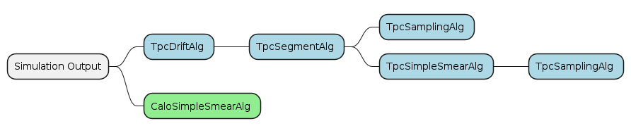

compact xml, for segmentation usage.
<readout_pcbs name="Pcb"
material="PCB"
vis="TpcPcbVis">
<!-- shape [todo: only box suported] -->
<shape type="Box" dx="Tpc_Pcb_X/Tpc_Pcb_Nx/2" dy="Tpc_Pcb_Y/Tpc_Pcb_Ny/2" dz="Tpc_Pcb_Z/2"/>
<!-- surface -->
<surface dim_u="fiducial_x*2" dim_v="fiducial_y*2">
<u_direction x="1." y="0." z="0."/>
<v_direction x="0." y="1." z="0."/>
<normal x="0." y="0." z="1."/>
<origin x="0." y="0." z="-Tpc_Pcb_Z/2"/>
</surface>
<!-- Row and column number: if not specified, a mono PCB is defined -->
<row nmodules="Tpc_Pcb_Nx" gap="Tpc_Pcb_RowGap" />
<column nmodules="Tpc_Pcb_Ny" gap="Tpc_Pcb_ColGap" />
<!-- PCB envelop placement relative to subdector envelop -->
<position x="0" y="0" z="Tpc_Drift_Z/2+Tpc_Drift_Offset+Tpc_Pcb_Z/2"/>
<!-- <rotation x="100" y="80" z="90" /> -->
</readout_pcbs>

Output is electrons drifted to the anode surface
drift and diffusion coordinates are in local systeme of drift volume
<readouts>
<!-- pixel readout -->
<readout name="TpcPixelHits">
<segmentation type="CartesianGridXY" grid_size_x="tpc_pixel_x" grid_size_y="tpc_pixel_y"
offset_x="-fiducial_x + tpc_pixel_x/2" offset_y="-fiducial_y + tpc_pixel_y/2" />
<id>system:6,x:16:24,y:24</id>
</readout>
<!-- strip readout -->
<readout name="TpcStripHits">
<segmentation type="MultiSegmentation" key="layer">
<segmentation name="XLayer" type="CartesianStripX" key_value="0"
strip_size_x="tpc_strip_x" offset_x="-fiducial_x + tpc_strip_x/2" />
<segmentation name="YLayer" type="CartesianStripY" key_value="1"
strip_size_x="tpc_strip_y" offset_x="-fiducial_y + tpc_strip_y/2" />
</segmentation>
<!-- <hits_collections>
<hits_collection name="TpcStripHitsX" key="layer" key_value="0"/>
<hits_collection name="TpcStripHitsY" key="layer" key_value="1"/>
</hits_collections> -->
<id>system:6,layer:6,strip:16:48</id>
</readout>
</readouts>
GeoSvc